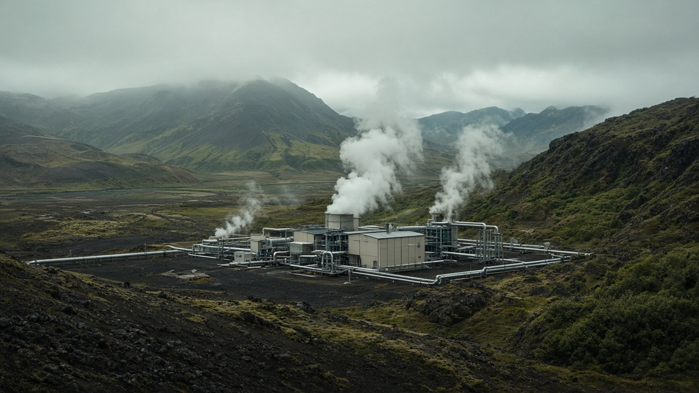
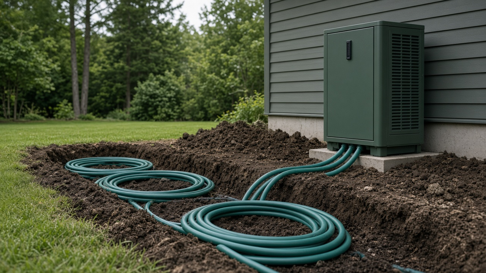
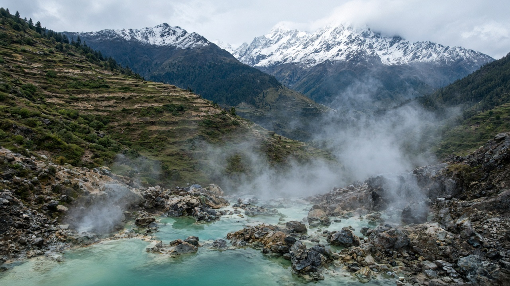

Geothermal Energy Systems
Published on August 21, 2026

Geothermal energy taps heat stored beneath Earth's surface to generate electricity or provide direct heating for buildings, greenhouses, and industrial processes. In volcanic and tectonically active regions, hot water and steam reservoirs lie close enough to drill economically, driving turbines in geothermal power plants with very low greenhouse gas emissions during operation. Even in areas without high-temperature resources, shallow ground-source heat pumps use stable underground temperatures to efficiently heat and cool buildings by exchanging heat through buried loops, reducing reliance on fossil furnaces and air conditioners.
Exploration for geothermal resources involves geological mapping, geochemical sampling of hot springs, geophysical surveys, and test drilling to confirm temperature, flow rate, and sustainability of reservoirs. Managed correctly, geothermal fields can produce baseload power around the clock, complementing intermittent solar and wind. Over-extraction without reinjection can deplete reservoirs or cause subsidence, so monitoring and regulatory oversight are essential. Iceland, Kenya, Indonesia, and parts of the Philippines demonstrate how geothermal can supply a large share of national electricity where geology cooperates.
The Himalaya and associated tectonic belt include numerous hot springs suggesting geothermal potential in parts of Nepal and neighboring countries, though development requires detailed feasibility studies, grid access, and investment in specialized drilling expertise. Direct-use applications such as bathing, space heating, and agro-processing offer lower-cost entry points before full power plants are justified. Partnerships with universities and international developers can transfer exploration skills to local geologists and engineers. Geothermal will never be universal, but where resources exist, it provides reliable clean energy with a small land footprint. Integrating geothermal into national renewable strategies diversifies supply and strengthens resilience against climate variability affecting hydropower and seasonal solar output.

भूतापीय ऊर्जाले पृथ्वीको सतहमुनि संचित ताप प्रयोग गरेर विद्युत उत्पादन वा भवन, ग्रीनहाउस र औद्योगिक प्रक्रियाका लागि प्रत्यक्ष ताप प्रदान गर्छ। ज्वालामुखी र टेक्टोनिक रूपमा सक्रिय क्षेत्रहरूमा, तातो पानी र भापको भण्डार आर्थिक रूपमा बोरिङ गर्न सकिने गरी नजिकै हुन्छ, जसले भूतापीय विद्युत गृहमा टर्बाइन चलाउँछ र सञ्चालनमा ग्रीनहाउस ग्यास उत्सर्जन धेरै कम हुन्छ। उच्च तापमान स्रोत नभएका क्षेत्रहरूमा पनि, उथलो भू-स्रोत ताप पम्पले स्थिर भूमिगत तापक्रम प्रयोग गरेर गाडिएका लूपमार्फत ताप आदान-प्रदान गरी भवनहरूलाई कुशलतापूर्वक तताउँछ र चिसो पार्छ, जसले जीवाश्म इन्धन भट्टी र एयर कन्डिसनरमा निर्भरता घटाउँछ।
भूतापीय स्रोतको अन्वेषणमा भू-वैज्ञानिक नक्सा, तातो झरनाको भू-रासायनिक नमूना, भू-भौतिक सर्वेक्षण र परीक्षण बोरिङ समावेश हुन्छ, जसले भण्डारको तापक्रम, प्रवाह दर र दिगोपन पुष्टि गर्छ। सही व्यवस्थापन भए भूतापीय क्षेत्रहरू चौबीसै घण्टा आधारभूत विद्युत उत्पादन गर्न सक्छ, जुन अनियमित सौर्य र पवन ऊर्जालाई पूरक बनाउँछ। पुनः इन्जेक्सन बिना अत्यधिक निकासीले भण्डार सक्न वा भू-धसान गराउन सक्छ, त्यसैले अनुगमन र नियामक निगरानी अपरिहार्य छ। आइसल्याण्ड, केन्य, इन्डोनेसिया र फिलिपिन्सका केही भागहरूले भू-वैज्ञानिक अनुकूल हुँदा भूतापीयले राष्ट्रिय विद्युतको ठूलो हिस्सा कसरी पूरा गर्न सक्छ भन्ने देखाउँछ।
हिमालय र सम्बन्धित टेक्टोनिक पट्टीमा धेरै तातो झरनाहरू छन्, जसले नेपाल र छिमेकी देशका केही भागहरूमा भूतापीय सम्भावना संकेत गर्छ, तर विकासका लागि विस्तृत व्यवहार्यता अध्ययन, ग्रिड पहुँच र विशेष बोरिङ विशेषज्ञतामा लगानी आवश्यक छ। नुहाउने, स्थान तताउने र कृषि-प्रशोधन जस्ता प्रत्यक्ष प्रयोगका अनुप्रयोगहरू पूर्ण विद्युत गृह अघि कम लागतमा सुरु गर्न सकिने बिन्दु प्रदान गर्छन्। विश्वविद्यालय र अन्तर्राष्ट्रिय विकासकर्तासँगको साझेदारीले अन्वेषण सीप स्थानीय भू-वैज्ञानिक र इन्जिनियरहरूमा हस्तान्तरण गर्न सक्छ। भूतापीय कहिल्यै सार्वभौमिक हुनेछैन, तर जहाँ स्रोत छ, त्यहाँ यसले सानो भू-क्षेत्रमा भरपर्दो स्वच्छ ऊर्जा दिन्छ। राष्ट्रिय नवीकरणीय रणनीतिमा भूतापीय समावेश गर्दा आपूर्ति विविध हुन्छ र जलविद्युत र मौसमी सौर्य उत्पादनमा असर पार्ने जलवायु परिवर्तनविरुद्ध लचिलोपन बढ्छ।

भू-तापीय ऊर्जा पृथ्वी की सतह के नीचे संचित ऊष्मा का उपयोग करके बिजली उत्पादन या भवनों, ग्रीनहाउस और औद्योगिक प्रक्रियाओं के लिए प्रत्यक्ष ताप प्रदान करती है। ज्वालामुखी और टेक्टोनिक रूप से सक्रिय क्षेत्रों में, गर्म पानी और भाप के भंडार इतने नज़दीक होते हैं कि आर्थिक रूप से बोरिंग की जा सके, जो भू-तापीय बिजली संयंत्रों में टरबाइन चलाते हैं और संचालन के दौरान ग्रीनहाउस गैस उत्सर्जन बहुत कम रहता है। उच्च तापमान संसाधन न होने वाले क्षेत्रों में भी, उथले भू-स्रोत ताप पंप स्थिर भूमिगत तापमान का उपयोग करके दबे हुए लूप के माध्यम से ऊष्मा विनिमय करके भवनों को कुशलता से गर्म और ठंडा करते हैं, जिससे जीवाश्म ईंधन भट्टियों और एयर कंडीशनर पर निर्भरता कम होती है।
भू-तापीय संसाधनों की खोज में भू-वैज्ञानिक मानचित्रण, गर्म झरनों का भू-रासायनिक नमूना, भू-भौतिक सर्वेक्षण और परीक्षण बोरिंग शामिल है, जो भंडार के तापमान, प्रवाह दर और स्थिरता की पुष्टि करते हैं। सही प्रबंधन से भू-तापीय क्षेत्र चौबीसों घंटे आधारभूत बिजली उत्पादन कर सकते हैं, जो अस्थिर सौर और पवन ऊर्जा की पूरक होती है। पुनः इंजेक्शन के बिना अत्यधिक निकासी भंडार समाप्त कर सकती है या धंसाव का कारण बन सकती है, इसलिए निगरानी और नियामक देखरेख आवश्यक है। आइसलैंड, केन्या, इंडोनेशिया और फिलीपींस के कुछ हिस्से दिखाते हैं कि भू-विज्ञान अनुकूल होने पर भू-तापीय राष्ट्रीय बिजली का बड़ा हिस्सा कैसे पूरा कर सकता है।
हिमालय और संबंधित टेक्टोनिक पट्टी में कई गर्म झरने हैं, जो नेपाल और पड़ोसी देशों के कुछ हिस्सों में भू-तापीय क्षमता का संकेत देते हैं, हालांकि विकास के लिए विस्तृत व्यवहार्यता अध्ययन, ग्रिड पहुंच और विशेष बोरिंग विशेषज्ञता में निवेश आवश्यक है। स्नान, स्थान तापन और कृषि-प्रसंस्करण जैसे प्रत्यक्ष उपयोग अनुप्रयोग पूर्ण बिजली संयंत्रों से पहले कम लागत वाले प्रवेश बिंदु प्रदान करते हैं। विश्वविद्यालयों और अंतर्राष्ट्रीय विकासकर्ताओं के साथ साझेदारी स्थानीय भू-वैज्ञानिकों और अभियंताओं में खोज कौशल हस्तांतरित कर सकती है। भू-तापीय कभी सार्वभौमिक नहीं होगा, लेकिन जहां संसाधन मौजूद हैं, वहां यह छोटे भू-क्षेत्र में विश्वसनीय स्वच्छ ऊर्जा प्रदान करता है। राष्ट्रीय नवीकरणीय रणनीतियों में भू-तापीय को एकीकृत करने से आपूर्ति विविध होती है और जलविद्युत और मौसमी सौर उत्पादन को प्रभावित करने वाली जलवायु परिवर्तनशीलता के खिलाफ लचीलापन मजबूत होता है।